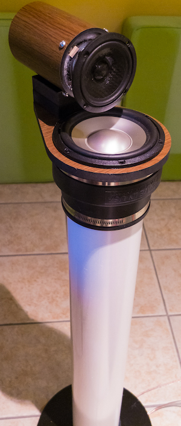
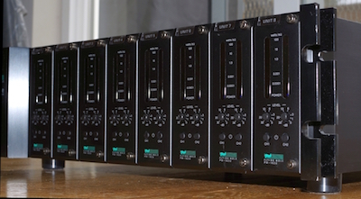
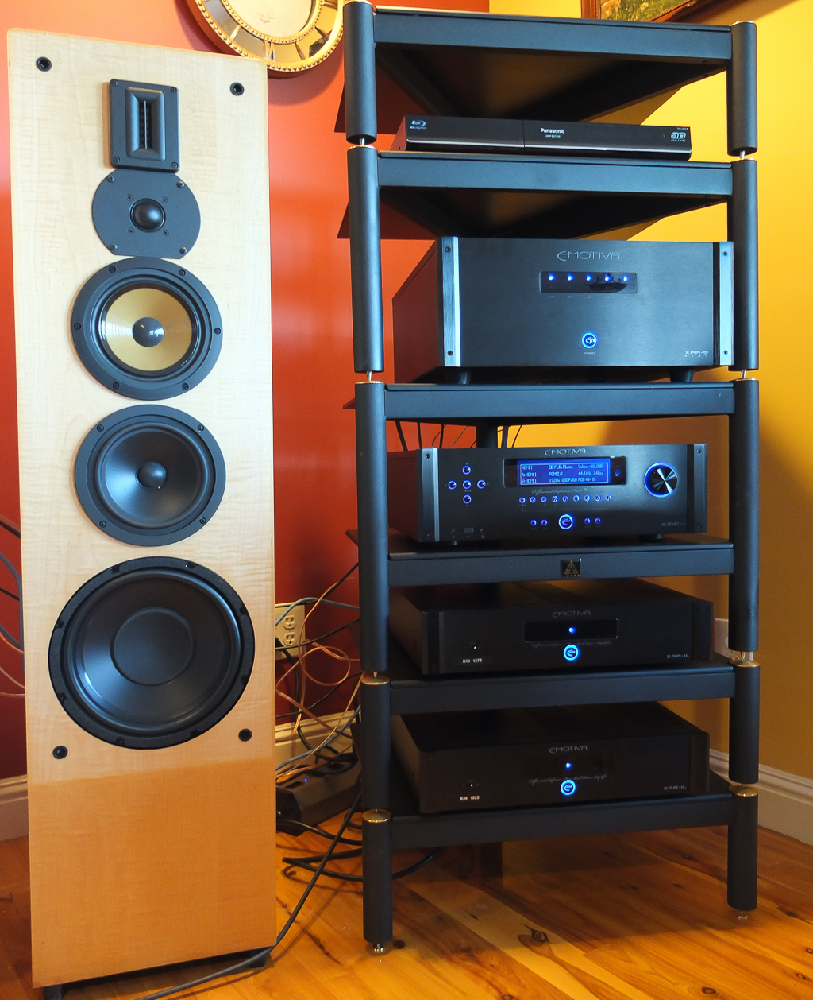

Introduction
Not that long ago, I stumbled upon Siegfried Linkwitz’s web site when I was doing some research on speaker designs, and particularly open baffle systems. I became fascinated by his designs and ideas. His approach is different from the mainstream in the sense he goes down to basics, and starts by analyzing how we humans actually hear. In his web site, he states:
“What you hear is not the air pressure variation in itself but what has
drawn your attention is the two streams of superimposed air pressure
variations at your eardrums”.
With that as a starting point, he has perfected several designs over the years that culminate on the amazing LX521.4, the LXMini and the LXStudio, all very affordable, build-it-yourself designs that can literally rival speakers much, much more expensive. In fact, I’d argue that the LX521.4 specifically can rival any speaker at any price point.
There is a healthy online community all over the world, building speakers based on his designs. Siegfried himself kindly offers others to come to his home and listen to them. Since he lives about an hour from where I live, I decided to reach out and kindly ask if I could listen to his speakers. He accepted, and one rainy morning, there I was in his living room.
First of all, I have to say that meeting him and his lovely wife was an amazing experience. He’s such a humble and kind gentleman, and his only interest is to share with others. We started with his program material on the LX521.4 where we spent the bulk of the time, and then moved to the LXMini. I brought with me my Fiio X5 player, which we connected to his preamp. I chose Tangerine Dream’s White Eagle as program material due to my familiarity with it on a number of listening conditions, and broad sound range.
The most amazing thing about both pairs of speakers is the fact they disappear completely once you start listening. Yes, you see them but if you focus on the music, it’s like being in a live event. The open baffle design makes them sound very spacious and effortless. Listening is not tiring in any way. It feels natural.
The room itself becomes part of the listening experience. You can move around and you still feel the music “filling” every part of the room. It’s really amazing.
Of course, the LX521.4 are the real deal, reaching every part of the audible spectrum. The LXMini rolls off around 45 Hz which is plenty good for most material but their overall sound is outstanding for such a small speaker.
So I decided to build the LXMini first, and I write this post just a couple of days after I finished them. I set them up in my man cave, which is in itself a room with horrible reverberations and acoustically very harsh. Yet, the same thing I observed at SL’s home I saw here: the speakers just blend in and make the room part of the experience. That’s why you don’t need (and shouldn’t use) room correction software on these speakers.
This is a picture of my finished pair:

I have them connected to my 16-channel Flying Mole amplifier. My sources are mostly high-resolution audio in PCM and DSD (my own ripped CDs and SACDs), fed from my Mac laptop using Audirvana Plus and HQPlayer to my iFi micro-DSD DAC. For my initial setup, no preamp or other equipment was required since the DAC has a volume control in it.

It’s pretty incredible the amount and quality of the sound you get from such small speakers. The Norwegian-made Seas drivers are spectacular, and since each is fed with it’s own amplification channel and a carefully crafted profile in the miniDSP acting as a digital crossover, the results are very predictable and reproducible every time.
I’ve already tested a very broad set of material and although everything sounds great, for recorded live concerts, the experience is outstanding. Supertramp Live in Paris (1980) or Flairk Live in Amsterdam (1980) for example, feel like being right there with the crowd. Other complex recordings like David Bowie’s Bring Back the Disco King (Reality, 2003) sound deep and effortless. These speakers can stand head to head with much more expensive gear without sounding “boxy”.
My main system in my living room (pictured below) uses a pair of Legacy Audio Signature III speakers, each powered by Emotiva XPA-1L monoblocks, and although they go deeper than the LXMini (down to 20 Hz), and sound louder given the sheer amount of drivers, as soon as you move away from the sweetspot, you loose the realism of the recording, in spite of being bipolar. These speakers are an order of magnitude more expensive than the LXMini, and yet, I find myself enjoying the music more with my new speakers than my primary system.

I’m not saying the LXMinis are better than my Legacy Audio system. What I’m saying is that after a couple of hours of listening, I find the minis more natural, more engaging and easy on my ears. It’s hard to describe.
As expected, the low-end extension, although fantastic, is somewhat lacking, depending on the type of music you like. So I tested using a regular Wharfdale subwoofer crossed at 50 Hz. From the range perspective, yes, it works very well. Music feels definitely more “complete”. But since it’s a direct-firing sub, somewhow the airiness and openess feel gets lost.
So I was going to build a pair of dipole subwoofers (as explained here) to complement the system. Lucky for me, another forum member was selling a pair of dipole subs he built based on one of the original SL’s designs. Initially, I have them placed to the outer sides of each LXmini, crossed at 50Hz and attenuated to -5 dB using a pair of channels in my amp. The sound is absolutely amazing. Once you hear dipole subs, it’s hard to go back to direct firing.
Unfortunately, my preamp (a Pioneer Elite SC-68 receiver being used as preamp) has a mono subwoofer output, so I’m not getting channel differentiation. So my next step is to replace the miniDSP 2x4 by a miniDSP 4x10 and apply the settings explained in the forum, to get the complete range. This is part of the tinkering of the DIY world, and I’m sure I’ll have something else to update later on.
The construction process was rather simple, although it took me some time. I have terrible DIY skills, so if I could do it, anybody can. My plan is to eventually, either move them to the bedroom or leave them as “surround” speakers on a 5.1 setup after I build the LX521.4, but for now, I’m just going to enjoy them, or rather, enjoy the music, which is the most interesting effect of these speakers.
I’m going to say that if you are someone who really enjoys listening to music, you must do yourself a favor and build a pair of speakers based on Siegfried Linkwitz’s designs.
comments powered by Disqus